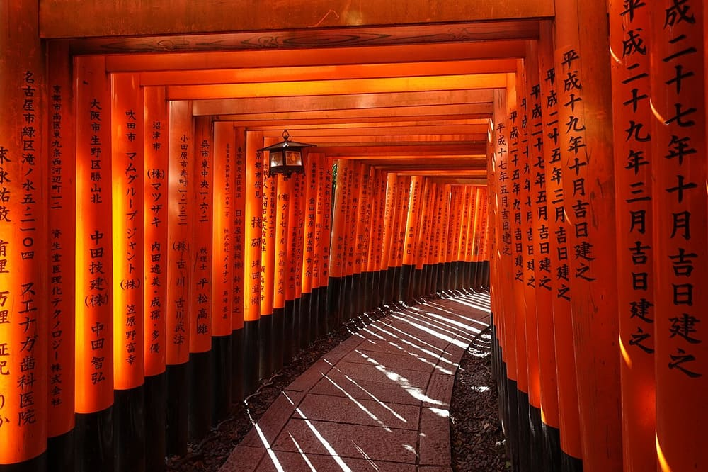
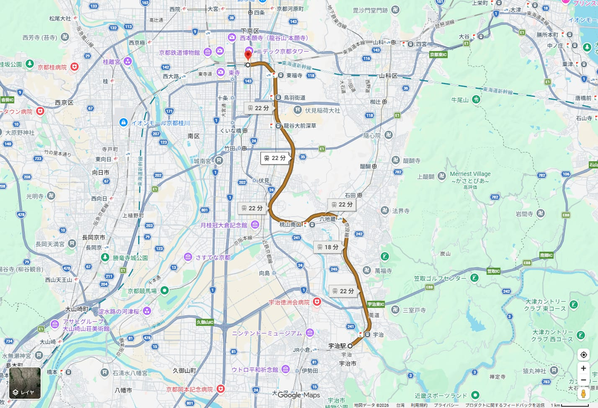
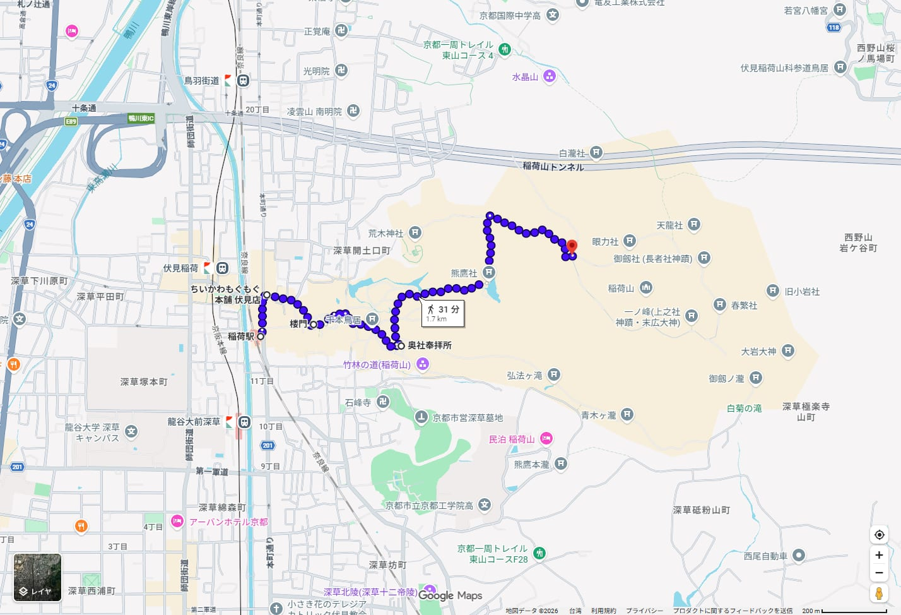
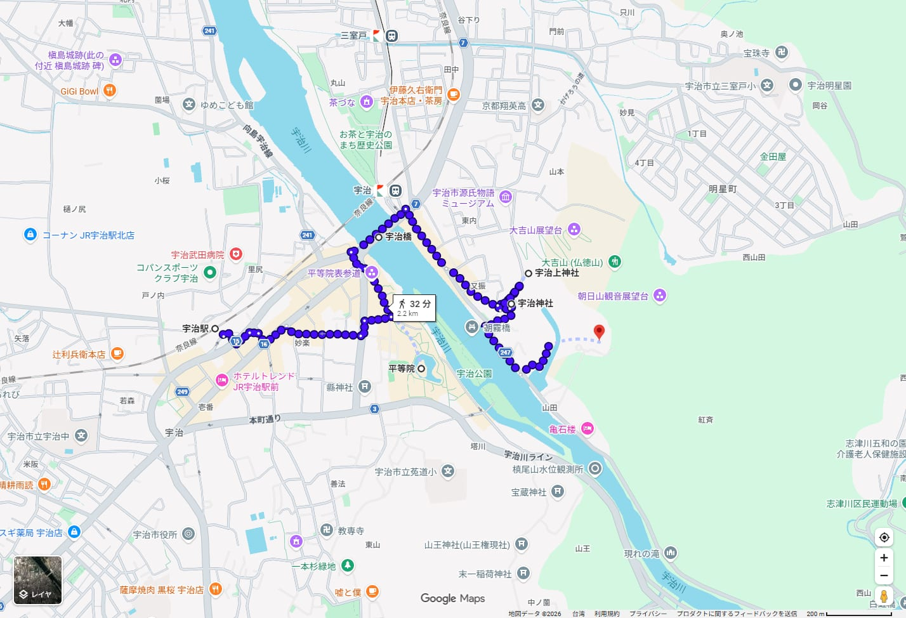
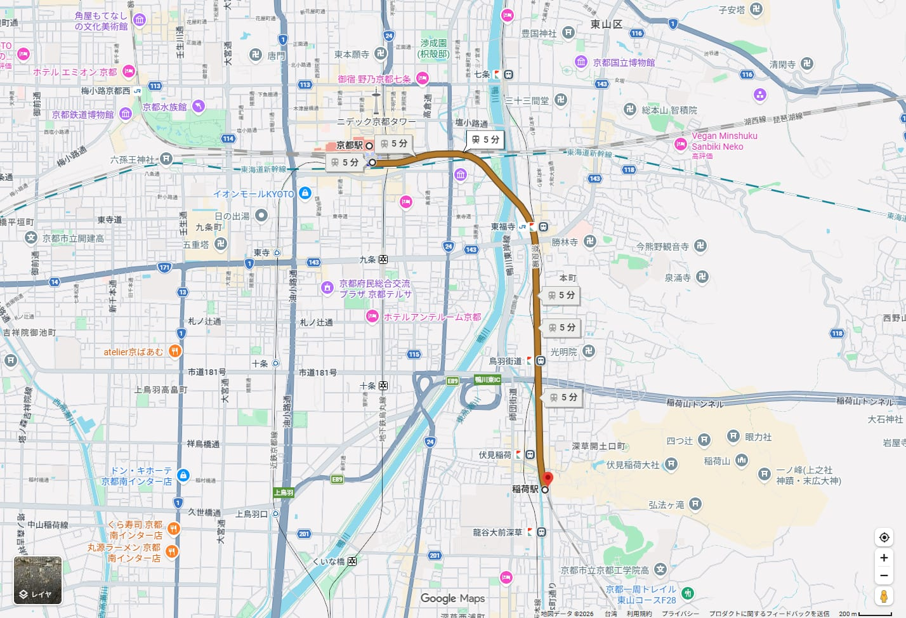
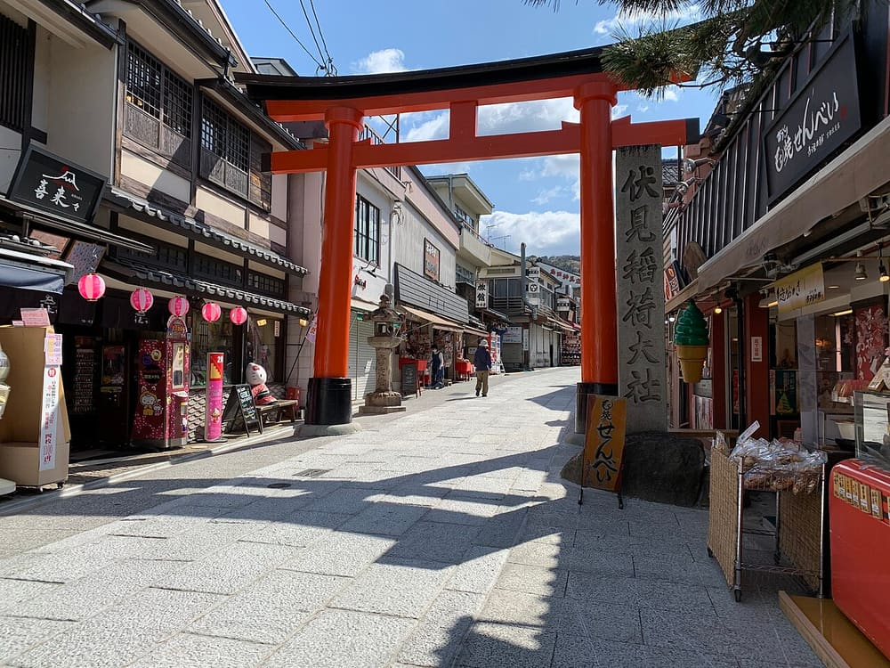
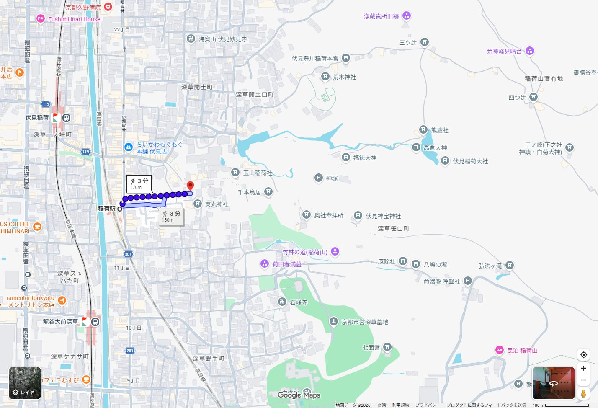
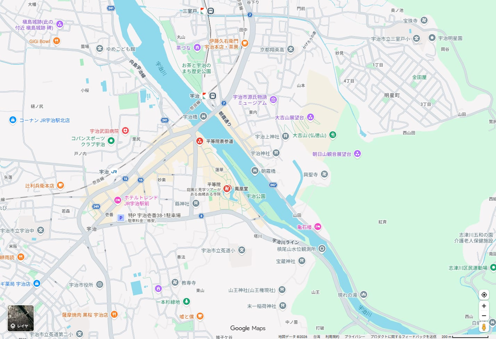

伏見稲荷・宇治一日手冊 伏見稲荷大社・平等院・宇治上神社2027/04/08（四）1 / 24
2027.04.08木曜日
伏見稲荷・宇治一日
千本鳥居・平等院・宇治上神社
觀光＋御朱印 行程說明書

Luka Peternel・CC BY-SA 4.0・2018 年攝・Wikimedia Commons
2 人，京都站出發並返回。07:05 搭 JR 奈良線 6 分鐘到稲荷，趁人少走千本鳥居到四ツ辻，下山領御朱印後在參道逛街（含ちいかわもぐもぐ本舗）。11:02 在同一條線再南下 17 分鐘到宇治，走平等院、宇治橋、宇治上神社、宇治神社，體力夠再到興聖寺，15:37 搭みやこ路快速回京都。全程沒有轉乘。
查證等級：✅ 官方原文 📷 omairi.club 訪客投稿（附日期） ⚠️ 二手資料或估算。時刻與費用以 2026/10/03 查到的資料為準，2027 年版時刻尚未公布，內文有標示。
伏見稲荷・宇治一日手冊 伏見稲荷大社・平等院・宇治上神社2027/04/08（四）2 / 24
基旅行基本資訊
| 日期 | 2027/04/08（四）。我用日期換算確認是星期四；4/8 不在日本祝日，但我沒有逐項核對 2027 年祝日表 ⚠️ |
|---|
| 人數 | 2 人 |
|---|
| 出發・結束 | 京都站。住宿在京都站周邊 |
|---|
| 時間 | 07:05 京都発，15:55 回到京都。19:00 前解散，保留約 3 小時緩衝，可用在晚餐或補拍 |
|---|
| 交通 | JR 奈良線（京都⇄稲荷⇄宇治）＋步行。不搭巴士，不需要預約座位 |
|---|
| 步行量 | Google 估算：稲荷區約 52 分鐘、宇治區約 51 分鐘 ⚠️，另加境內走動。稲荷山有 100 m 左右的上坡與石階（奥社奉拝所到四つ辻上り 104 m ⚠️） |
|---|
| 預估費用 | 每人約 ¥6,200～¥8,200（交通、門票、御朱印、午茶、午餐）。不含ちいかわ周邊。明細見第 19 頁 |
|---|
| 櫻與藤 | 平等院官網：桜 見頃 3 月下旬～4 月上旬，藤 4 月中旬～5 月初旬 ✅。4/8 是櫻的尾聲、藤還早，實際花況看當年 ⚠️ |
|---|
| 預約 | 沒有需要事先預約的項目。鳳凰堂內部拝観是當天領時間券，中村藤吉不接受預約 ✅。ちいかわ有預約制的日子，2027/4/8 未載明 ✅ |
|---|
今日特色
- 北往南一直線，同一條 JR 奈良線。京都 → 稲荷 2.7 km → 宇治 14.9 km，JR 西日本查詢結果轉乘 0 次 ✅。
- 稲荷山海拔 233 m✅，鳥居沿山道一路往上。本行程走到四つ辻折返，不登頂。
- 今天最大的時間風險是鳳凰堂內部拝観。官網 4 月平日的待ち時間是 1.5 小時前後，2026/10/16 起每回定員由 50 名減為 35 名 ✅。
- 4/8 是興聖寺的降誕会（花まつり）✅，官網寫有行持時可能暫停堂內拝観與御朱印受付。
可信度圖例
| 標記 | 意思 | 本手冊的做法 |
|---|
| ✅ | 官方原文核實 | 開啟寺社、鐵道、店家、市府、觀光協會官網確認，搜尋摘要不算。官網只有圖片的數字，我讀圖後標明。 |
| 📷 | omairi.club 訪客投稿 | 附參拜日期，只用來判斷直書き／書置き、授與位置。 |
| ⚠️ | 二手資料或估算 | Google Maps 估算、舊資料網站、我的推算。官網沒寫的一律寫「未載明」。 |
2027/04/08（四）公休與休運檢查
| 地點 | 結果 | 依據 |
|---|
| 伏見稲荷大社 | 開放。4/8 沒有祭事（産業祭 4/11、稲荷祭神幸祭 4/18） | 官網 年間行事 ✅；ご祈祷「年中無休」 ✅ |
| ちいかわもぐもぐ本舗 | 年中無休。但旺季可能整理券 | 官網 ✅ |
| おせんの里 松屋 | 「不定休」，4/8 是否營業無法確認 | 官網 ✅ |
| 平等院 庭園・鳳翔館 | 年中無休。茶房藤花 月火水休，所以週四營業 | 官網 ✅ |
| 中村藤吉 平等院店 | カフェ 10:00～17:00。定休日官網未載明 | 官網 ✅（定休日未載明） |
| 宇治上神社・宇治神社 | 官網沒有列休日 | 官網 ✅ |
| 興聖寺 | 4/8 降誕会，可能暫停堂內拝観與御朱印 | 官網 ✅ |
| JR 奈良線 | 用平日時刻。2027 年版尚未公布 | JR 西日本 ✅ |
基出發前最需要再確認的 5 件事
- JR 2027 年 4 月的時刻。JR 西日本官網的時刻只到 2026/12/31 ✅，本手冊用 2026 年 10 月號的平日時刻。2027 年 2～3 月再查三班：07:05 京都発、11:02 稲荷発、15:37 宇治発。官網目前沒有 2027 春的改正預告 ✅。
- 平等院鳳凰堂內部拝観。要先領時間券，4 月平日的待ち時間是 1.5 小時前後 ✅，每回定員 2026/10/16 起改為 35 名 ✅。11:30 到院，時間券可能落在 13:00 以後，與原定 12:45 離院衝突。第 12 頁有判斷規則。
- 興聖寺 4/8 降誕会。官網寫本堂有行持時，堂內拝観與御朱印受付可能暫停 ✅，當天安排未公布。打 0774-21-2040 確認。另外官網兩處寫的步行時間互相矛盾（JR 25 分／30 分），15:37 的車沒有緩衝。
- 伏見稲荷的御朱印。inari.jp 沒有御朱印的種類、初穂料、授与時間 ✅；2026 年的 omairi 投稿顯示授与所有直書き與切り絵書置き 📷，接近 16 時只剩書置き 📷。本行程排在 08:55，電話 075-641-7331 可確認。
- 4/8 當天各店是否營業與排隊。ちいかわ平常自由入店，但混雜時發整理券、2026/10/10～12 是全日預約制 ✅；松屋與參道稲荷壽司店多為「不定休」 ✅／⚠️。
預約與開賣日：本日沒有需要事先預約或限時開賣的項目。ちいかわ的預約制是臨時措施（2026/10/10～12，前一天先着受付 ✅），2027/4/8 若有，會在官網與官方 X 公告。
日文地名對照（貼進 Google Maps 搜尋用）
| 日文 | 讀音 | 說明 |
|---|
| 京都駅 | きょうとえき | JR 奈良線 8・9・10 番のりば ✅ |
| 稲荷駅 | いなりえき | 1 番＝京都方面、2 番＝宇治・奈良方面 ✅ |
| 伏見稲荷大社 楼門 | ふしみいなりたいしゃ ろうもん | 單搜「伏見稲荷大社」會落在稲荷山腰，要加「楼門」 |
| 千本鳥居／奥社奉拝所／四ツ辻 | せんぼんとりい／おくしゃほうはいしょ／よつつじ | 稲荷山的折返路線 |
| ちいかわもぐもぐ本舗 京都伏見店 | ちいかわもぐもぐほんぽ | 參道上，9:30 開店 ✅ |
| おせんの里 松屋 | おせんのさと まつや | 稲荷煎餅老店 |
| 宇治駅（JR） | うじえき | 京阪宇治駅是另一站，不要選錯 |
| 平等院／鳳凰堂／鳳翔館 | びょうどういん／ほうおうどう／ほうしょうかん | 集印所稱「御集印」 |
| 中村藤吉 平等院店 | なかむらとうきち びょうどういんてん | セルフカフェ |
| 宇治橋／朝霧橋 | うじばし／あさぎりばし | 宇治川上的兩座橋 |
| 宇治上神社／宇治神社 | うじがみじんじゃ／うじじんじゃ | 兩座相鄰，不要搞混 |
| 興聖寺／琴坂 | こうしょうじ／ことざか | 曹洞宗、參道 |
| 御朱印／直書き／書き置き | ごしゅいん／じかがき／かきおき | 朱印／現場手寫／預先寫好的紙 |
行今日行程總覽
| 時間 | 地點 | 行程 | 交通 | 停留 |
|---|
| 07:05→07:11 | 京都駅→稲荷駅 | 普通 宇治行（10 番のりば） | JR ✅ | 6 分 |
| 07:11～07:15 | 稲荷駅 | 改札內洗手間（改札外沒有） | — | 4 分 |
| 07:15～07:35 | 伏見稲荷大社 | 楼門・外拝殿・本殿 | 步行 5 分 ⚠️ | 20 分 |
| 07:35～08:55 | 稲荷山 | 千本鳥居→奥社奉拝所→四ツ辻→下山 | 步行 45 分 ⚠️ | 80 分 |
| 08:55～09:15 | 本殿授与所 | 御朱印 | — | 20 分 |
| 09:15～09:30 | 参道 | 走回參道 | — | 15 分 |
| 09:30～10:55 | 伏見稲荷参道 | ちいかわもぐもぐ本舗（9:30 開）、松屋、稲荷壽司 | 步行 | 85 分 |
| 11:02→11:19 | 稲荷駅→宇治駅 | 普通 奈良行（2 番のりば） | JR ✅ | 17 分 |
| 11:19～11:30 | 宇治駅→平等院 | 平等院官網寫徒歩 10 分 | 步行 ✅ | 11 分 |
| 11:30～12:45 | 平等院 | 領內部拝観時間券→鳳翔館→庭園→御集印 | 境內 | 75 分 |
| 12:45～13:20 | 平等院表参道 | 中村藤吉 平等院店（午茶） | 步行 1 分 ⚠️ | 35 分 |
| 13:20～13:45 | 宇治橋・宇治川畔 | 散步，橋西詰洗手間 | 步行 4 分 ⚠️ | 25 分 |
| 13:45～14:20 | 宇治上神社 | 國寶本殿、御朱印 | 步行 10 分 ⚠️ | 35 分 |
| 14:20～14:40 | 宇治神社 | みかえり兎、御朱印 | 步行 2 分 ⚠️ | 20 分 |
| 14:40～15:10 | 興聖寺 | 彈性：琴坂、御朱印（降誕会） | 步行 6 分 ⚠️ | 30 分 |
| 15:10～15:37 | →JR 宇治駅 | 沿河走回，Google 20 分，官網 25～30 分 | 步行 ⚠️ | 27 分 |
| 15:37→15:55 | 宇治駅→京都駅 | Dみやこ路快速（京都 10 番） | JR ✅ | 18 分 |
今天的時間界線
| 項目 | 時間 | 備註 |
|---|
| 京都発 JR（去程） | 06:48／07:05／07:15／07:29 | 本命 07:05。全部停稲荷 ✅ |
| 稲荷発（往宇治） | 10:50／11:02／11:09（みや快）／11:20 | 本命 11:02 到 11:19。11:09 みや快 11:21 到 ✅ |
| 宇治発（回京都） | 15:37（みや快）／15:40（普通）／15:52／16:07（みや快） | 本命 15:37 到 15:55。錯過搭 15:40 到 16:02 ✅ |
| ちいかわ 開店 | 9:30～17:30 | 混雜時整理券 ✅ |
| 伏見稲荷 御朱印 | 官網未載明 | 📷 接近 16 時只剩書置き。本行程 08:55 |
| 平等院 內部拝観受付 | 9:10 起，各回 :10／:30／:50，最終 16:10 | 先着，每回 35 名（2026/10/16 起） ✅ |
| 平等院 集印所 | 9:10～17:00（受付 16:45） | 現金 ✅ |
| 平等院 庭園／鳳翔館 | 8:45～17:30（受付 17:15）／9:00～17:00（16:45） | ✅ |
| 中村藤吉 平等院店 | カフェ 10:00～17:00（LO 16:30） | 不預約，客滿會提早收 ✅ |
| 宇治上神社 | 授与所 9:00～15:50，閉門 16:00 | 過時不授與 ✅ |
| 宇治神社 | 御守・御朱印 16:30，祈禱 16:00 | ✅ |
| 興聖寺 | 拝観受付 10:00～16:00 | 4/8 降誕会，行事で入山規制あり ✅ |
行今日路線地圖

MAP 01 全日總覽：JR 宇治駅→京都駅的轉乘路線，涵蓋京都、稲荷、宇治三站與奈良線・Google Maps 截圖・地圖資料 ©2026 Google・截取日期 2026/10/03
Google Maps 的轉乘路線只能查兩點，所以全日不能畫成一條線。上圖是其中一段轉乘，三站都在同一條奈良線上，這就是今天不折返的原因。圖上稲荷駅字樣被別的標籤擠掉，位置在伏見稲荷大社與龍谷大前深草之間。
行程順序示意圖（示意圖，非地理比例）
京都駅→ JR 6 分 →
稲荷駅→ 步行 →
伏見稲荷大社→稲荷山 四ツ辻→参道→ JR 17 分 →
宇治駅→平等院→宇治橋→宇治上神社→宇治神社→興聖寺→ 步行 →
宇治駅→ JR 18 分 →京都駅
為什麼這樣走最順
- 稲荷與宇治都在 JR 奈良線上，由京都往南，去程 6 分＋17 分，回程 18 分，沒有轉乘 ✅。
- 稲荷放在早上：千本鳥居一早人少，御朱印趁授与所剛開就領。
- 宇治放在中午以後：平等院的內部拝観、宇治上神社（15:50 截止）、宇治神社都在開放時間內。
- 宇治區內走「宇治橋→宇治上神社→宇治神社→興聖寺」，Google 估算 18 分、約 1.34 km，比先去宇治神社短 3 分 ⚠️。
順路加入的景點
- ちいかわもぐもぐ本舗：在稲荷駅到楼門的參道上，不繞路。
- 宇治神社：離宇治上神社 190 m，步行 2～3 分 ⚠️。
- 興聖寺：在宇治川上游方向，離宇治神社 450 m ⚠️，但回 JR 宇治駅要走 20～30 分。
值得去但不排的景點
- 稲荷山一ノ峰（最高峰 233 m）✅：官網沒有寫所要時間，攻頂會吃掉參道逛街與宇治的時間。
- 三室戸寺：離宇治駅另有一段交通，本次未查官網，不排。
- 源氏物語ミュージアム：週一休，4/8 開館 ✅，可當洗手間，但不是參觀重點。
- 対鳳庵（市営茶室）：4/8 開席，1,000 円起（宇治市観光協会，約 10:00～16:00 ⚠️）。午茶已排中村藤吉。
反向走法（宇治→稲荷）比較
- 優點：一早到平等院，9:10 領時間券就能排 9:30 前後的回，待ち時間短；宇治上神社與御集印也寬鬆。
- 缺點：稲荷放到下午，千本鳥居人潮最高峰，御朱印接近 16 時只剩書置き 📷；ちいかわ整理券的風險也在下午。
- 結論：維持順向。若最在意鳳凰堂內部，可以把「先宇治、再稲荷」當作替代案。
伏見稲荷・宇治一日手冊 伏見稲荷大社・平等院・宇治上神社2027/04/08（四）6 / 24
行區段地圖Google 估算的步行時間，不含參拜

MAP 02 稲荷：稲荷駅→ちいかわ→楼門→奥社奉拝所→四つ辻（31 分、1.7 km ⚠️）・Google Maps 截圖・地圖資料 ©2026 Google・截取日期 2026/10/03
| 區間 | 時間 | 距離 | 備註（Google 估算 ⚠️） |
|---|
| 稲荷駅→ちいかわもぐもぐ本舗 | 2 分 | 130 m | 平坦 |
| ちいかわ→楼門 | 3 分 | 200 m | |
| 楼門→奥社奉拝所 | 6 分 | 350 m | 平坦，途中經千本鳥居 |
| 奥社奉拝所→四つ辻 | 20 分 | 1.0 km | 上り 104 m，最高點 164 m，最低點 60 m |
| 四つ辻→楼門 | 19 分 | 1.2 km | 下り 124 m |
| 楼門→稲荷駅 | 2 分 | 170 m | |

MAP 03 宇治：JR宇治駅→平等院→宇治橋→宇治上神社→宇治神社→興聖寺（32 分、2.2 km ⚠️）・Google Maps 截圖・地圖資料 ©2026 Google・截取日期 2026/10/03
| 區間 | 時間 | 距離 | 備註（Google 估算 ⚠️） |
|---|
| JR 宇治駅→平等院 | 9 分 | 650 m | 上り 60 m。官網寫 10 分 ✅ |
| 平等院→宇治橋 | 4 分 | 240 m | 經表參道 |
| 宇治橋→宇治上神社 | 10 分 | 700 m | 另有 11 分、750～800 m 的路線 |
| 宇治上神社→宇治神社 | 2 分 | 190 m | 反向 3 分 |
| 宇治神社→興聖寺 | 6 分 | 450 m | 直線路徑，兩地之間隔著宇治川支流，現場確認 |
| 興聖寺→JR 宇治駅 | 20 分 | 1.4 km | 興聖寺官網寫 25 分與 30 分，兩處不一致 ✅ |
| 興聖寺→宇治橋 | 13 分 | 950 m | 另有 14 分的路線 |
行交通總覽
| 段 | 起訖 | 工具・時間 | 徒步 | 轉乘 | 費用 | 來源 |
|---|
| 1 | 京都駅→稲荷駅 | JR 奈良線 普通，07:05→07:11（6 分），10 番のりば | 稲荷駅→楼門 2 分 ⚠️ | 0 | ¥150（2.7 km） | ✅ |
| 2 | 稲荷駅→宇治駅 | JR 奈良線 普通，11:02→11:19（17 分），稲荷 2 番のりば | 宇治駅→平等院 10 分 | 0 | ¥240（12.2 km） | ✅ |
| 3 | 宇治駅→京都駅 | JR 奈良線 Dみやこ路快速，15:37→15:55（18 分），京都 10 番のりば | 興聖寺→宇治駅 20～30 分 | 0 | ¥240（14.9 km） | ✅ |
運賃是 JR 西日本「マイ・ダイヤ」查到的乗車券運賃 ✅。IC 卡運賃是否同額，官網未載明 ⚠️。合計每人 ¥630，2 人 ¥1,260。「快速うれしート」指定席另加 ¥530，自由席不用加價 ✅。
每段的 Google Maps 導航（點開在手機看即時路線）
交通方式比較
| 方式 | 時間・費用 | 評價 |
|---|
| JR 奈良線（本案） | 京都→稲荷 6 分、稲荷→宇治 17 分、宇治→京都 18 分；¥630 | 零轉乘，三站同一條線 ✅ |
| 京阪（替代） | 京都→三条或祇園四条再搭京阪，去宇治要在中書島轉乘，市官網寫約 30 分 ✅ | 要先到京阪沿線，轉乘多。京阪宇治駅離宇治橋較近（すぐ） ✅ |
| 步行／計程車 | 未查 | 不列入 |
一日券判斷
- 單買最划算：每人 ¥630。
- 「關西地區鐵路周遊券」已於 2026/9/30 停止販售 ✅（舊價 1 日 ¥2,800）。
- 京都觀光一日券是否含 JR 奈良線，官網未開成，一般不含 JR，我未核實 ⚠️。本行程不需要。
特別注意
- 稲荷駅的改札外沒有洗手間，改札內有 ✅，07:11 下車先用。
- 宇治有兩個「宇治駅」：JR 與京阪。請選 JR 宇治駅（奈良線）。
- 末班：京都発 23:46（奈良行）、宇治発 23:47，不影響今天 ✅。
伏見稲荷・宇治一日手冊 伏見稲荷大社・平等院・宇治上神社2027/04/08（四）8 / 24
行JR 奈良線乘車指南與出發段落
怎麼認車、怎麼搭
- 京都駅的奈良線在 8・9・10 番のりば ✅。從八条口側改札進去較近（構內圖判讀 ⚠️）。
- 07:05 是 10 番、宇治行；07:15 是 9 番、奈良行。上哪一班都會停稲荷 ✅。
- 稲荷駅：1 番＝京都方面，2 番＝宇治・奈良方面，單一改札在 1 樓，ICOCA 可用 ✅。
- 宇治駅：改札在 2 樓，1・2 番＝京都方面，3・4 番＝奈良方面 ✅。
各種別停靠的站
| 種別 | 停靠站（京都～宇治） |
|---|
| 普通 | 京都・東福寺・稲荷・JR 藤森・桃山・六地蔵・木幡・黄檗・宇治 ✅ |
| みやこ路快速／区間快速 | 京都・東福寺・稲荷・六地蔵・宇治（JR 藤森、桃山、木幡、黄檗 通過） ✅ |
時刻表以 JR 西日本「JR 時刻表 2026 年 10 月號」平日為準，10/08 與 12/03 兩個平日內容相同 ✅。官網時刻只到 2026/12/31，2027/04/08 查不到 ✅。
三段的候選班次（平日）
| 京都発 | 種別 | 番線 | 稲荷着 |
|---|
| 06:48 | 普通 奈良 | 9 | 06:53 |
| 07:05 | 普通 宇治 | 10 | 07:11 |
| 07:15 | 普通 奈良 | 9 | 07:21 |
| 07:29 | 普通 奈良 | 10 | 07:35 |
| 07:40 | 普通 宇治 | 8 | 07:47 |
| 07:51 | D区間快速 | 10 | 07:57 |
| 稲荷発 | 種別 | 宇治着 |
|---|
| 10:50 | 普通 | 11:07 |
| 11:02 | 普通 奈良 | 11:19 |
| 11:09 | Dみやこ路快速 | 11:21 |
| 11:20 | 普通 | 11:37 |
| 11:39 | Dみやこ路快速 | 11:51 |
| 宇治発 | 種別 | 京都着 |
|---|
| 15:07 | みやこ路快速 | 15:25 |
| 15:10 | 普通 | 15:32 |
| 15:22 | 普通 | 15:43 |
| 15:37 | Dみやこ路快速 | 15:55 |
| 15:40 | 普通 | 16:02 |
| 15:52 | 普通 | 16:14 |
| 16:07 | みやこ路快速 | 16:25 |
與已確認行程的差異：原定「07:00 發、07:05 到」「11:00 發、11:16 到」「15:40 搭みやこ路快速」，實際班次沒有這三個時刻。我改用最近的 07:05→07:11、11:02→11:19、15:37→15:55，行程其他部分順延或縮短 5 分鐘內。15:40 是普通，16:02 才到京都 ✅。
出發段落（06:55 京都駅集合）

MAP T1 京都駅→稲荷駅（轉乘，Google 估算 5 分、¥150）・Google Maps 截圖・地圖資料 ©2026 Google・截取日期 2026/10/03
伏見稲荷・宇治一日手冊 伏見稲荷大社・平等院・宇治上神社2027/04/08（四）9 / 24
観伏見稲荷大社簡介與基本資訊
為什麼推薦這裡？
全日的開場，也是最需要早到的一站。稲荷神社約 3 萬社的總本宮 ✅，楼門是神社楼門中規模最大的一群 ✅，本殿是重要文化財 ✅。京都市觀光協會在 2025/1/30 公告這一帶非常擁擠 ✅，所以 07:15 抵達：鳥居隧道人少、御朱印趁授与所剛開就領，9:30 起的參道逛街再把時間還給自己。
景點簡介
稲荷山是東山三十六峰最南端的山，海拔 233 m，一ノ峰・二ノ峰・三ノ峰由西往東漸高，山中有數萬座お塚 ✅。稲荷大神是穀物與商業的神，狐狸是神使「白狐」，不是山裡看到的狐狸；朱色是驅邪與豐收的顏色 ✅。楼門是天正 17 年（1589）豊臣秀吉為母親祈願所造，昭和 48 年解體修理時發現同年的墨書 ✅。本殿在應仁之亂燒毀後於明応 8 年（1499）再興，稱「稲荷造」 ✅。千本鳥居是奥社參道上由崇敬者奉納形成的名所，奉納風氣在江戶時代已興起 ✅。鳥居數量官網兩處不一致：FAQ 寫約 1 萬基，地圖頁寫「数千」 ✅。
現場看什麼？
- 楼門與外拝殿：神社楼門中規模最大的一群，07:15 逆光較少。
- 本殿（重要文化財）：稲荷造，懸魚與蟇股的裝飾。
- 千本鳥居：奥社參道，兩條並行；柱面有奉納者姓名與年份。
- 奥社奉拝所與おもかる石：位在命婦谷，石燈籠空輪抬起時比預想輕表示願望可成 ✅。
- 熊鷹社（新池）：池畔小社，別稱谺ヶ池 ✅。
- 四ツ辻：稲荷山中腰的十字路口，本行程折返點，可看京都市區。
建議停留：07:15～09:30，約 2 小時 15 分（含御朱印，不含逛街）。
基本資訊
| 地址・電話 | 〒612-0882 京都市伏見区深草薮之内町68番地，TEL 075-641-7331 ✅ |
|---|
| 開放時間 | 官網沒有寫參拝時間 ✅。Impress Watch 寫「全年終日開門」 ⚠️；ご祈祷 8:30～16:30（受付約 16:00 前）、年中無休 ✅ |
|---|
| 門票 | 官網沒有拝観料的說明 ✅（沒有收費頁面） |
|---|
| 離上一點 | 稲荷駅→楼門：官網寫「Right next to Inari Station」 ✅；Google 170 m、2 分 ⚠️ |
|---|
| 行事 | 4/8 沒有祭事；産業祭 4/11（日）、稲荷祭 神幸祭 4/18（日）是我依官網「4 月 8 日最近的日曜日」「4 月 20 日最近の日曜日」換算 ⚠️ |
|---|
| 設施 | 稲荷駅改札內有洗手間、改札外沒有 ✅；コインロッカー在表参道南側駐輪場內，大 ¥500／中 ¥300／小 ¥200（2024/4 公告，現況要確認） ✅ |
|---|
| 注意 | 官網禁止在無料休憩所以外邊走邊吃與站著吃、禁帶寵物、禁在狹窄參道擋路拍照；2025/12/28 公告稲荷山有野豬出沒 ✅ |
|---|
御朱印資訊
| 官網 | 種類、初穂料、授与時間、窗口、直書き或書置き都未載明 ✅ |
|---|
| 授與位置 | 授与所（本殿側）。2026/08/20 投稿寫「授与所にて直書きと切絵タイプ」 📷 |
|---|
| 形式 | 直書き：2026/09/15、09/08、08/20 📷；切り絵書置き：2026/09/26、08/20 📷；接近 16 時只剩書置き（2026/09 下旬投稿） 📷 |
|---|
| 期間限定 | 夏季限定御朱印 ¥500、書置きのみ（2026/08/28） 📷。4 月是否有限定未載明 |
|---|
| 初穂料 | 通常款的金額未載明。我預估 ¥300～500 ⚠️ |
|---|
| 推薦 | 收集價值 ★★★★★（總本宮，切り絵款特色）。值得收集與值得參觀都高 |
|---|
在 Google Maps 開啟楼門 （單搜「伏見稲荷大社」會落在山腰約 760 m 外）
伏見稲荷・宇治一日手冊 伏見稲荷大社・平等院・宇治上神社2027/04/08（四）10 / 24
観伏見稲荷大社參觀路線與時間不夠時
建議路線（楼門→千本鳥居→奥社奉拝所→四ツ辻→原路下山）
| 順 | 區間・內容 | 時間 | 看什麼、做什麼 |
|---|
| 1 | 稲荷駅→楼門 | 2 分 ⚠️ | 改札內洗手間先用（改札外沒有 ✅） |
| 2 | 楼門・外拝殿・本殿 | 20 分 | 1589 年的楼門、重要文化財的本殿 |
| 3 | 楼門→奥社奉拝所 | 6 分 ⚠️ | 千本鳥居。第一段較窄，邊走邊拍，不要擋路（官網禁止在窄參道擋路拍照 ✅） |
| 4 | 奥社奉拝所・おもかる石 | 10 分 | 石燈籠空輪在奉拝所右後方 ✅ |
| 5 | 奥社→四つ辻 | 20 分 ⚠️ | 1.0 km，上り 104 m，石階。沿路有熊鷹社（新池） ✅ |
| 6 | 四ツ辻 展望 | 10 分 | 折返點。看京都市區 |
| 7 | 四つ辻→楼門 | 19 分 ⚠️ | 1.2 km，下り 124 m，下坡對膝蓋較吃力 |
| 8 | 授与所 御朱印 | 20 分 | 本行程 08:55。見第 9 頁 |
只剩 60 分鐘怎麼走
- 楼門・本殿 10 分，千本鳥居走到奥社奉拝所 15 分（含拍照），おもかる石 5 分，原路回 6 分，御朱印 15 分。
- 放棄四ツ辻：往返約 39 分 ⚠️，這是最先刪的部分。
時間充裕怎麼加
- 熊鷹社的池畔多停留。官網沒有寫離奥社的距離與時間 ✅。
- 荒神峰：官網寫後方視野開闊，四辻看不到的京都市中心以北清楚可見 ✅。所要時間未載明。
- 一ノ峰（最高峰 233 m、末広大神） ✅：官網沒有寫所要時間，搜尋摘要寫往返約 1 小時，我沒有採用。
山上補給與注意
- 啼鳥菴（八島ヶ池畔）是 2017/12 新設的休憩所，附露台席 ✅。官網沒寫營業時間。
- 大藪茶亭（奥社前）9:00～16:00，寫「木曜日休」（月末月初與祝日另有規定）；にしむら亭（四ッ辻）9:00～17:00、第 3・4・5 金休。來源是商店街舊網站（憑證失效、更新停在 2020 年） ⚠️。4/8 是木曜，大藪茶亭很可能休息，早上登山也趕不上 9:00 開店，水自己帶。
- 官網禁止邊走邊吃，只能在無料休憩所吃 ✅。2025/12/28 公告稲荷山有野豬出沒 ✅。
- 颱風等天候時，夜間稲荷山參拜會被限制（2026/6 公告 ✅）。
四ツ辻在官網只於荒神峰的說明裡提到，沒有單獨的介紹與所要時間 ✅。上表時間皆為 Google 估算，不含參拜與拍照 ⚠️。
伏見稲荷・宇治一日手冊 伏見稲荷大社・平等院・宇治上神社2027/04/08（四）11 / 24
食參道逛街09:30～10:55，今天保留的悠閒時段

inunami・CC BY 2.0・2020 年攝・Wikimedia Commons
MAP 稲荷駅→楼門 参道（Google 估算 2～3 分）・Google Maps 截圖・地圖資料 ©2026 Google・截取日期 2026/10/03ちいかわもぐもぐ本舗 京都伏見店
| 位置 | 〒612-0807 京都市伏見区深草稲荷中之町46-1，TEL 075-643-0050。JR 稲荷駅徒歩 5 分，在稲荷駅到楼門的參道上 ✅ |
|---|
| 營業 | 9:30～17:30，年中無休；「狀況により營業時間が變更になる場合」 ✅ |
|---|
| 入店 | 平常自由入店（2024/1/5 公告 ✅）。大混雜時改整理券，會在官方 X 公告；2025/10/30 公告「急遽の入店制限や整理券」 ✅。2026/10/10～12 是全日預約制（前一天先着） ✅。2027/4/8 未載明 |
|---|
| 付款 | 現金、信用卡、電子マネー、條碼支付；交通系 IC 未特別載明 ✅ |
|---|
| 購買 | 部分商品有購買限制，不取り置き ✅。攝影規則官網未載明 |
|---|
| 商品 | 伏見稲荷なぬいぐるみ ¥2,530、マスコット ¥1,760、かわらせんべい ¥1,350（2023/10 開幕價，現價要確認） ✅ |
|---|
| 怎麼排 | 9:30 剛下山就到。若發整理券或排隊超過 30 分，先逛松屋與稲荷壽司店再回頭，10:55 一定要走（11:02 的車） |
|---|
其他店家（營業時間 4/8 是否營業都不確定）
| 店 | 資訊 | 4/8（四） | 來源 |
|---|
| おせんの里 松屋（稲荷煎餅） | 〒612-0012 深草一ノ坪町27，TEL 075-641-1906，8:00～18:00，不定休。官網寫伏見稲荷大社徒歩 4 分、京阪伏見稲荷駅徒歩 1 分，另一頁寫 JR 稲荷駅徒歩 3 分，位置要用 Google Maps 確認 | 未確認 | ✅ |
| 日野家（稲荷壽司） | 9:00～18:00，不定休 | 未確認 | ⚠️ 舊資料 |
| 近江家 | 9:00～18:30，不定休 | 未確認 | ⚠️ 舊資料 |
| 花家 | 8:30～17:00，不定休 | 未確認 | ⚠️ 舊資料 |
| 祢ざめ家 | 商店街站寫 9:00～18:00，另一網站寫 10:00～16:00、賣完即止、不可刷卡、預算 ¥1,000～2,500 | 未確認；開店時間不一致 | ⚠️ |
| 稲福 | 9:00～17:00，第 2・3・4 火休；定食 ¥2,000 起（沒有稲荷壽司價） | 週四開 | ⚠️ 舊資料 |
商店街網站（fusimi-inari.com）憑證無效、最新活動停在 2020 年，營業時間可能已改 ⚠️。稲荷壽司的價格在官方網站都查不到，我不列價格。官網禁止邊走邊吃，要在店內或休憩所吃 ✅。
怎麼用這 85 分鐘
- 09:30 ちいかわ（30～40 分，視排隊）。
- 10:10 稲荷壽司當午餐（開 9:00 起的日野家、近江家、稲福，或 8:30 起的花家；先看門口有沒有開）。
- 10:40 伴手禮與松屋（離楼門 4 分，是一段折返 ⚠️，趕時間就跳過）。
- 10:55 回稲荷駅，11:02 發車。
伏見稲荷・宇治一日手冊 伏見稲荷大社・平等院・宇治上神社2027/04/08（四）12 / 24
観平等院鳳凰堂・鳳翔館・御集印
為什麼推薦這裡？
宇治的核心，也是今天最需要管理時間的一站。庭園是「平安時代に完成した最古の浄土庭園」，國史跡・名勝 ✅。內部拝観看得到定朝作的國寶阿弥陀如来坐像，由職員說明約 15 分 ✅；鳳翔館收藏國寶梵鐘、雲中供養菩薩像 26 躯、鳳凰一對 ✅。外觀＋鳳翔館約 40 分，加內部拝観的待ち時間要另算 ✅。
現場看什麼？
- 阿字池對岸看鳳凰堂，4 月初還有阿字池沿岸的櫻（官網見頃 3 月下旬～4 月上旬 ✅）。
- 鳳凰堂內部：國寶阿弥陀如来坐像（定朝作）。
- 鳳翔館：國寶梵鐘、雲中供養菩薩像、鳳凰、十一面観音菩薩立像（重文），另有復原映像 ✅。
- 藤棚：官網見頃 4 月中旬～5 月初旬，4/8 偏早 ✅。
- 觀音堂保存修理：官網 2026/3/20 公告落慶「2027 年春以降の見込み」，周圍仍有圍籬 ✅。
今天最大的衝突：鳳凰堂內部拝観的時間券。官網寫「事前に内部拝観受付にて時間券をお求めの上、開始 5 分前に集合」，9:10 起發放、先着、發完為止 ✅。待ち時間表（2025 年實績）4 月平日是 1.5 小時前後（△），4 月土日祝是 2 小時前後（▲） ✅，我讀的是官網表上的符號。2026/10/16 起每回定員由 50 名減為 35 名，官網說繁忙季待ち時間會比以往更長 ✅。omairi 2026/06/28 投稿寫「内部拝観、２時間待ちで諦めました」 📷。11:30 抵達的話，時間券很可能落在 13:00 以後，與原定 12:45 離院不合。
到院後的判斷規則（先到庭園內「內部拝観受付」看次回的時間）
| 次回時間 | 做法 |
|---|
| 12:30 以前 | 照原計畫。官網寫「1 小時左右的待ち時間在庭園與鳳翔館的所要時間內」，先逛鳳翔館與庭園 ✅ |
| 12:30～13:30 | 領券。持內部拝観券可在受付門出示後再入場，開始 5 分前要回到集合處；遲到不能改時間或退費 ✅。等待時間去表参道午茶或茶房藤花，興聖寺刪除 |
| 13:30 以後或已發完 | 放棄內部拝観。外觀、鳳翔館、御集印照收，S 級的部分不受影響。往下走宇治橋，行程提早 |
基本資訊
| 住所・電話 | 京都府宇治市宇治蓮華116，TEL 0774-21-2861 ✅ |
|---|
| 時間 | 庭園 8:45～17:30（受付 17:15）；鳳翔館 9:00～17:00（16:45）；內部拝観 9:30～16:10，每 20 分一回（:10／:30／:50），受付 9:10 起；集印所 9:10～17:00（受付 16:45）；茶房藤花 10:00～16:30（LO 16:00） ✅ |
|---|
| 料金 | 庭園＋鳳翔館 大人 ¥700／中高 ¥400／小 ¥300（庭園沒有單買）；內部拝観志納 ¥300，受付與集印所只收現金；庭園拝観料可刷卡 ✅ |
|---|
| 公休 | 庭園、鳳翔館年中無休；內部拝観可能因荒天或行事休止；茶房藤花月火水休，4/8（四）營業 ✅ |
|---|
| 規則 | 境內禁止飲食與帶入，只有可密閉的水壺與寶特瓶可以；外帶杯不行（官網お知らせ ✅）。表參道買的抹茶冰淇淋不能帶進去。不能再入場（內部拝観券持有者例外） ✅ |
|---|
| 設施 | 境內 2 處洗手間都有輪椅對應；庭園是碎石路 ✅。距 JR 宇治駅：官網寫徒歩 10 分 ✅，Google 9 分 ⚠️ |
|---|
御朱印資訊（官網稱「御集印」）
| 種類・初穂料 | 「鳳凰堂」「阿弥陀如来」兩種，各 ¥300，現金 ✅ |
|---|
| 形式 | 官網寫「目の前で丁寧にお書きします」，但「帳面への記帳・書き置きの対応は日によって異なります」 ✅。2026/05/10、2025/12/03 投稿都是直書き 📷 |
|---|
| 貼帳・限定 | 能否貼帳、期間限定御集印官網未載明；夜間特別拝観已於 2026 年春後休止 ✅ |
|---|
| 推薦 | 收集價值 ★★★★☆。要先買庭園拝観券才進得去集印所 |
|---|
宇治駅→平等院
伏見稲荷・宇治一日手冊 伏見稲荷大社・平等院・宇治上神社2027/04/08（四）13 / 24
観宇治橋・宇治川畔13:20～13:45，平等院與宇治上神社之間
為什麼走這一段？
這是平等院到宇治上神社的必經路，順便休息、拍照、上洗手間。宇治市官網寫「646 年に僧道登によって架橋」，日本三大古橋之一，上游側突出的是「三の間」，現在的橋在 1996/3 完成 ✅。宇治橋西詰的「夢の浮橋広場」有紫式部像（2004/2 整備） ✅，宇治十帖是《源氏物語》最後十帖的舞台，橋畔另有宇治十帖モニュメント ✅。
現場看什麼？
- 宇治橋與三の間（橋中央突出處）。
- 夢の浮橋広場的紫式部像（橋西詰）。
- 塔の島的十三重石塔：約 15 m，1286 年叡尊建 ✅；從橋走過去約 10 分 ✅，本行程不去。
- あじろぎの道：平等院官網寫它連接表門與南門 ✅。
洗手間（宇治上神社境內沒有）
- 夢浮橋ひろば公衆トイレ：2026/3/6 改修後重開 ✅，13:20 在這裡用。
- 宇治市観光センター（平等院東側河畔）有無障礙廁所 ✅。
- 源氏物語ミュージアム：週一休，4/8 開館 ✅，也可以使用。
| 官方步行時間 | 宇治橋：JR 宇治駅徒歩 10 分、京阪宇治駅すぐ；平等院：宇治橋西詰徒歩 5 分；宇治上神社：宇治橋東詰徒歩 10 分 ✅ |
|---|
| Google 估算 | 平等院→宇治橋 4 分、宇治橋→宇治上神社 10 分 ⚠️ |
|---|
| 官方模範行程 | 宇治市官網的模範行程是平等院→表参道→塔の島→宇治上神社・宇治神社→宇治川周辺→抹茶スイーツ ✅ |
|---|
| 4/8 行事 | 宇治川さくらまつり 2027 年的日期官方未公告 ✅，2026 年為 4/4～5（只有搜尋摘要） ⚠️ |
|---|
| 御朱印 | 本區沒有 |
|---|

MAP 04 宇治周邊（搜尋「平等院」）：可看到宇治橋、JR 宇治、平等院、宇治上神社、宇治神社、興聖寺、朝霧橋・Google Maps 截圖・地圖資料 ©2026 Google・截取日期 2026/10/03
伏見稲荷・宇治一日手冊 伏見稲荷大社・平等院・宇治上神社2027/04/08（四）14 / 24
観宇治上神社國寶本殿，13:45～14:20
為什麼推薦這裡？
今天最安靜的一站，也是「值得參觀」與「值得收集」都高的一處。官網標示「世界文化遺産」，本殿依宇治市観光協会是「国宝」、平安時代後期、「現存する日本最古の神社建築」 ✅（宇治上神社自己的官網沒有建築說明）。放在下午是因為授与所只到 15:50，13:45 到有 2 小時的餘裕；它離宇治神社只有 190 m，兩座一起走。
由緒（官網「縁起」）
祭神菟道稚郎子是応神天皇的末子，被立為皇太子後把位子讓給兄長仁徳天皇，在宇治建離宮，之後為了讓世間不再因讓位而紛亂而自盡，仁徳天皇哀悼厚葬，成為創建的由來 ✅。「兔」是祭神名「菟」字與宇治古名「菟道」的由來，所以境內有兔子授与品 ✅。
現場看什麼？
- 本殿（國寶）：檜皮葺的屋頂與比例。
- 拝殿（鎌倉時代、國寶，官網沒寫，來自搜尋摘要 ⚠️）。
- うさぎ授与品：朱印帳 ¥2,000、七宝守 ¥700、鈴守 ¥800、姿守 ¥700、みくじ ¥500 ✅。
- 桐原水：官網未載明，不列。
基本資訊
| 住所 | 京都府宇治市宇治山田59 ✅ |
|---|
| 時間 | 開門 5:00、閉門 16:00；授与所與御朱印 9:00～15:50（最終受付）。授与所開前與關後不授與 ✅ |
|---|
| 料金 | 拝観料無料 ✅ |
|---|
| 設施 | 境內沒有洗手間、自動販賣機、垃圾桶，官網請用源氏物語ミュージアム或宇治川沿いのトイレ，垃圾自己帶走 ✅ |
|---|
| 步行 | 宇治橋東詰徒歩 10 分（宇治市官網 ✅）。官網兩頁寫法不一致：access 頁「京阪 10 分／JR 20 分」，map 頁「京阪 5 分／JR 20 分」 ✅。Google：宇治橋→宇治上神社 10 分 ⚠️ |
|---|
御朱印資訊
| 種類 | 「い」白紙、¥500；「ろ」色紙、¥500（價格在官網圖片上，我讀圖） ✅。初穂料現金 ✅ |
|---|
| 形式 | 官網：墨字的「い」才直書き，「ろ」色紙要自己貼；有書き手時才直書き，否則書置き，開始書寫時刻每天不同 ✅。2026/09/21、05/10 投稿都是直書き 📷，2026/05/10 另有書置き ¥800 📷。要貼帶雙面膠 |
|---|
| 期間限定 | 官網季節朱印連結頁 404，未載明。2026/01/10 有丙午御朱印 ¥500 📷 |
|---|
| 推薦 | 收集價值 ★★★★★。授与所在 13:45 時應該已開，15:50 是最後 |
|---|
宇治橋→宇治上神社
伏見稲荷・宇治一日手冊 伏見稲荷大社・平等院・宇治上神社2027/04/08（四）15 / 24
観宇治神社みかえり兎，14:20～14:40
為什麼推薦這裡？
離宇治上神社只有 190 m，走 2～3 分鐘 ⚠️，是今天「順路收集」最典型的一站。官網寫宇治神社在宇治橋上游、宇治川右岸，是応神天皇離宮「桐原日桁宮」的遺址 ✅，兩座神社祭祀同一位祭神，風格不同：宇治上神社安靜厚重，這裡有兔子與御朱印帳的可愛一面。
由緒（官網）
祭神菟道稚郎子命（応神天皇之子），創祀是 313 年 5 月，仁徳天皇即位後祭祀其神靈 ✅。本殿是國指定重要文化財，鎌倉時代初期、三間社流造、檜皮葺；木造坐像也是重文 ✅。神使「みかえり兎」：祭神從河內往宇治途中迷路，一隻兔子一邊回頭一邊引路 ✅。御神徳是學業成就、合格與安產 ✅。
現場看什麼？
- 本殿（重要文化財）與拝殿（桐原殿）。
- みかえり兎的石像與授与品（おみくじ ¥500 ✅）。
- 御朱印帳：白、水色、紫、粉紅、抹茶色、焙茶色，各 ¥2,000 ✅。
- 本殿屋根葺き替え（第二期）時程未定，是否影響參拜未載明 ✅。
基本資訊
| 住所・電話 | 京都府宇治市宇治山田1，TEL 0774-21-3041 ✅ |
|---|
| 時間 | 境內自由；御守・御朱印到 16:30；祈禱到 16:00 ✅ |
|---|
| 料金 | 參拜無料 ✅ |
|---|
| 步行 | 京阪宇治駅約 9 分、JR 宇治駅約 15 分（官網 ✅）；離宇治上神社的距離官網未載明，Google 190 m、2 分 ⚠️。洗手間官網未載明 |
|---|
御朱印資訊
| 種類 | 神社名朱印 ¥500（可直書き）、御祭神名朱印 ¥500（紙のみ）、みかえりうさぎ朱印 ¥500（紙のみ） ✅ |
|---|
| 形式 | 2026/09/21、05/10、04/02 投稿都是直書き 📷；2026/01/10 的ウサギ御朱印是印刷書置き ¥500 📷。兔子款是紙，要貼帳（帶雙面膠） |
|---|
| 郵寄 | 可郵寄授與，另收匯款與郵寄手續費 ✅ |
|---|
| 推薦 | 收集價值 ★★★★☆。想收兔子就三種紙都拿，不想就只拿神社名直書き |
|---|
宇治上神社→宇治神社
伏見稲荷・宇治一日手冊 伏見稲荷大社・平等院・宇治上神社2027/04/08（四）16 / 24
観興聖寺彈性行程，14:40～15:10
為什麼推薦這裡？
B 級，是今天最容易被拿掉的一站，但琴坂的石坂與安靜是宇治核心區沒有的。官網寫它是曹洞宗高祖道元禅師「初開之道場」，1233 年開創，1648 年永井尚政再興 ✅。4/8 恰逢降誕会，既有氣氛也有風險（見下）。
現場看什麼？
- 琴坂：宇治川畔石柱後的石坂參道，水聲像琴音而得名 ✅。
- 山門（1844 年建、龍宮造、宇治市指定） ✅，樓上是鐘楼「興聖の晩鐘」。
- 法堂：伏見城遺構，有鶯張りの廊下與血天井 ✅。
- 祠堂殿「手習観音」：宇治市指定有形文化財，與《源氏物語》宇治十帖「手習」有關 ✅。
- 大書院庭園（官網寫春天櫻很美）與茶筅塚。
4/8 是降誕会（花まつり）。官網年中行事寫「4 月 8 日 降誕会」，公告另寫「本堂で行持がある場合、堂内拝観、御朱印の受付を一時的に停止する場合がございます」，拝観頁寫「行事により、入山規制あり」 ✅。2027/4/8 的具體安排未載明，打 0774-21-2040 確認。若停止，直接刪掉這一站，15:10 前回宇治駅。
基本資訊
| 住所・電話 | 京都府宇治市宇治山田27-1，TEL 0774-21-2040 ✅ |
|---|
| 時間・料金 | 拝観受付 10:00～16:00，志納 ¥500；買御朱印帳後，下次起憑帳免拝観料 ✅ |
|---|
| 步行 | 官網寫法互相矛盾並列：首頁與「興聖寺について」寫 JR 25 分、京阪 15 分；「拝観・交通案内」與頁尾寫 JR 30 分、京阪 20 分 ✅。Google 估算：興聖寺→JR 宇治駅 20 分、1.4 km ⚠️。本行程 15:10 離開、15:37 發車，只有 27 分，我採官網較長的說法，沒有緩衝 |
|---|
| 離上一點 | 宇治神社→興聖寺 6 分、450 m（Google ⚠️），中間隔著宇治川支流，現場確認路線 |
|---|
| 休日 | 定休日、2027/4 入山規制日程官網未載明 |
|---|
御朱印資訊
| 官網 | 提供御朱印；沒有御朱印帳的人給紙朱印。初穂料、授与時間、直書き與書置き的規則未載明 ✅ |
|---|
| 授與位置 | 境內右側的寺務所（2025/12/18 投稿） 📷 |
|---|
| 形式 | 直書き只有「承陽大師」（道元禪師諡號），納経料 ¥500（2025/12/18） 📷；2026/05/06 帳面直書き 📷。秋季限定是書置きのみ（2025/11/29） 📷；切り絵、本尊是書置き（2025/07/27） 📷 |
|---|
| 推薦 | 收集價值 ★★★☆☆。降誕会當天可能暫停 |
|---|
宇治神社→興聖寺 興聖寺→宇治駅
伏見稲荷・宇治一日手冊 伏見稲荷大社・平等院・宇治上神社2027/04/08（四）17 / 24
食午餐與休息
主選（順路，不繞路）
| 時段 | 店 | 資訊 | 來源 |
|---|
| 10:10 午餐 | 稲荷参道的稲荷壽司店 | 日野家、近江家、稲福（週四開）、花家，營業時間見第 11 頁。價格官方查不到。要在店內吃，官網禁止邊走邊吃 | ⚠️ 舊資料 |
| 12:45 午茶 | 中村藤吉 平等院店 | 宇治市宇治蓮華5-1，TEL 0774-22-9500。カフェ 10:00～17:00（LO 16:30），銘茶売場 10:00～17:00。不接受預約、セルフサービス、客滿時會比 LO 更早收。定休日官網未載明。在表參道上，離平等院約 1 分 ⚠️ | ✅（定休日未載明） |
| 菜單 | 2026/10 時點（價格 2027 年可能變） | まるとパフェ ¥2,280、うじきんソフト ¥1,280、抹茶［薄茶］と抹茶ゼリイ ¥980、抹茶［薄茶］¥880。生茶蕎麥目前休止。菜單是圖片，我讀圖 | ✅ |
當天不可用或要注意
| 店 | 原因 | 來源 |
|---|
| 伊藤久右衛門 平等院店 | 只有賣場（9:30～17:30），沒有茶房，不能當午茶 | ✅ |
| 茶寮 FUKUCHA 宇治店（福寿園） | 2 樓喫茶只在土日祝營業，4/8 是週四，不可用 | ✅ |
備案
| 店 | 時間・資訊 | 什麼時候用 | 來源 |
|---|
| 茶房藤花（平等院境內） | 10:00～16:30（LO 16:00），月火水休，4/8 營業；抹茶 ¥1,000、煎茶 ¥800，附和菓子 | 內部拝観的等待時間 | ✅ |
| 伊藤久右衛門 JR 宇治駅前店茶房 | 10:00～18:00（LO 17:30），不預約、順番制，官網有待ち時間顯示；伊藤久右衛門パフェ 單品 ¥1,090／茶セット ¥1,590。南口徒歩約 1 分 | 回程 15:37 前若有空檔 | ✅ |
| 通圓 本店茶房 | 10:30～17:30（LO 16:00），年中無休；茶そば・茶だんご。宇治橋東詰 | 午茶客滿時 | ✅ |
| 対鳳庵（市営茶室） | 每月末日休席，4/8 開席；約 10:00～16:00、¥1,000 起（觀光協會） | 想坐下來喝茶時 | ✅（時間 ⚠️） |
洗手間與休息
| 地點 | 結果 |
|---|
| 稲荷駅 | 改札內有（含無障礙），改札外沒有 ✅ |
| 平等院境內 | 2 處，都有輪椅對應 ✅ |
| 宇治橋西詰 | 夢浮橋ひろば公衆トイレ，2026/3/6 改修後重開 ✅ |
| 宇治上神社 | 沒有（也沒有自販機與垃圾桶） ✅ |
| JR 宇治駅 | 改札內有輪椅對應洗手間 ✅；コインロッカー有，設置場所未載明 ✅ |
價格與營業時間以 2026/10/03 官網為準，2027/4 可能變動 ⚠️。中村藤吉不預約，12:45 若客滿，換茶房藤花或通圓。
伏見稲荷・宇治一日手冊 伏見稲荷大社・平等院・宇治上神社2027/04/08（四）18 / 24
印今日御朱印攻略順路收集，不為多收一張而繞路
| 寺社 | 參觀 | 收集 | 御朱印 | 授與位置 | 授與時間 | 取得方式 | 推薦 |
|---|
| 伏見稲荷大社 | S | S | 本社印；切り絵、限定款 | 授与所（本殿側） 📷 | 官網未載明 ✅；本行程 08:55 | 直書き 📷2026/09；接近 16 時只剩書置き | ★★★★★ |
| 平等院 | S | A | 御集印「鳳凰堂」「阿弥陀如来」各 ¥300 | 境內集印所 | 9:10～17:00（受付 16:45） ✅ | 直書き 📷2026/05/10；官網「日により異なる」 | ★★★★☆ |
| 宇治上神社 | S | A | 「い」¥500、「ろ」色紙 ¥500 | 授与所 | 9:00～15:50 ✅ | 書き手がいれば直書き 📷2026/09/21；ろ要貼 | ★★★★★ |
| 宇治神社 | A | A | 神社名／御祭神名／みかえりうさぎ 各 ¥500 | 授与所 | 16:30 まで ✅ | 神社名は直書き 📷2026/09/21；他は紙 | ★★★★☆ |
| 興聖寺 | B | B | 承陽大師（納経料 ¥500） | 境內右側の寺務所 📷 | 拝観 10:00～16:00 ✅；御朱印時間未載明 | 直書き 📷2025/12/18；4/8 降誕会で停止の可能性 | ★★★☆☆ |
今天預計收集幾張
- 基本 4 張：伏見稲荷、平等院（鳳凰堂）、宇治上神社（「い」）、宇治神社（神社名）。有走興聖寺則 5 張。
- 最多約 10 張：稲荷切り絵、平等院兩種、宇治上「ろ」、宇治神社三種、興聖寺。這個數字是上限，不是目標，兔子款與切り絵是自己愛不愛的問題。
御朱印排程
| 時間 | 在哪領 |
|---|
| 08:55 | 伏見稲荷 授与所 |
| 11:35～12:45 | 平等院 集印所（領券後或等候時） |
| 13:50 | 宇治上神社 授与所 |
| 14:25 | 宇治神社 授与所 |
| 14:45 | 興聖寺 寺務所（降誕会時可能停止） |
要不要帶膠水
- 要。宇治上神社的「ろ」色紙是貼付式 ✅，宇治神社兔子款、稲荷切り絵、興聖寺書置き都是紙，帶雙面膠或口紅膠。
- 帶 2 本御朱印帳：一本給寺（平等院、興聖寺），一本給神社，直書き時不用換。
- 零錢：¥100、¥500 硬幣與 ¥1,000 鈔，平等院集印所只收現金 ✅。
景點還開著，但御朱印可能不辦
- 宇治上神社：16:00 才閉門，但授与所 15:50 最後，過了不授與 ✅。
- 平等院：集印所 17:00，受付 16:45；人多時內部拝観會提早截止，集印所未載明 ✅。
- 興聖寺：4/8 降誕会，本堂有行持時暫停堂內拝観與御朱印 ✅；拝観受付 16:00 止。
- 伏見稲荷：官網沒有時間，下午直書き可能沒有 📷，不要拖到午後。
伏見稲荷・宇治一日手冊 伏見稲荷大社・平等院・宇治上神社2027/04/08（四）19 / 24
行一日時間軸
06:55京都駅 10 番のりば集合（07:05 發）
07:11稲荷駅，改札內洗手間 → 07:15 楼門
07:35千本鳥居、奥社奉拝所、四ツ辻（折返 08:25 前後）
08:55授与所領御朱印 → 09:15 下到參道
09:30ちいかわもぐもぐ本舗開店。10:10 稲荷壽司午餐 → 10:55 離開
11:02稲荷駅 2 番 發車，11:19 宇治駅（錯過搭 11:09 みや快，11:21 到）
11:30平等院：先領內部拝観時間券，再逛鳳翔館、庭園、御集印
12:45中村藤吉 平等院店 午茶（內部拝観排到後面時，改在藤花或晚一點）
13:20宇治橋、橋西詰洗手間
13:45宇治上神社（授与所 15:50 止）→ 14:20 宇治神社
14:40興聖寺（降誕会，先電話確認）→ 15:10 必須離開
15:37宇治駅 發車（Dみやこ路快速），15:55 京都駅。錯過搭 15:40 普通，16:02 到
16:00解散，到 19:00 還有約 3 小時
基費用總覽每人，日幣
| 項目 | 金額 | 來源 | 備註 |
|---|
| JR 三段 | ¥630 | ✅ | 乗車券運賃；IC 同額與否未載明 ⚠️ |
| 伏見稲荷 御朱印 | 約 ¥500 | ⚠️ | 金額未載明，我預估 ¥300～500 |
| 平等院 庭園＋鳳翔館 | ¥700 | ✅ | 沒有單買庭園 |
| 平等院 內部拝観 | ¥300 | ✅ | 現金，可不去 |
| 平等院 御集印 | ¥300 | ✅ | 現金 |
| 宇治上神社 御朱印 | ¥500 | ✅ | 「い」「ろ」同價 |
| 宇治神社 御朱印 | ¥500 | ✅ | 神社名；兔子款另 ¥500 |
| 興聖寺 拝観＋納経 | ¥1,000 | ✅／📷 | 拝観 ¥500 官網；納経 ¥500 投稿。可不去 |
| 午茶 | ¥980～¥2,280 | ✅ | 抹茶ゼリイ＋薄茶 到 まるとパフェ（2026/10 菜單） |
| 稲荷壽司午餐 | 約 ¥800～¥1,500 | ⚠️ | 官方查不到價格，我估算 |
| ちいかわ周邊 | 依購買 | ✅ | 例：なぬいぐるみ ¥2,530（2023 價）；不計入合計 |
合計：每人約 ¥6,200～¥8,200（含興聖寺，不含ちいかわ周邊與伴手禮），2 人約 ¥12,400～¥16,400。沒有一日券或套票比單買划算：JR 三段只要 ¥630，平等院庭園與鳳翔館本來就是一張票。
伏見稲荷・宇治一日手冊 伏見稲荷大社・平等院・宇治上神社2027/04/08（四）20 / 24
基雨天備案
下雨仍然值得去
- ちいかわもぐもぐ本舗、參道的店（屋內）。
- 平等院 鳳翔館與鳳凰堂內部拝観（屋內），庭園仍可走，但碎石路濕 ✅。
- 中村藤吉、茶房藤花、通圓（屋內喝茶）。
- 宇治上神社、宇治神社：參拜時間短，殿前有屋簷 ⚠️。
建議縮短或刪掉
- 稲荷山：石階濕滑 ⚠️，只走到奥社奉拝所，不上四ツ辻；颱風時夜間參拜與山道可能被限制（2026/6 事例 ✅）。
- 興聖寺琴坂：石板路濕，優先刪。
- 宇治橋・川畔：縮短，改在平等院與午茶多停留。
- 平等院內部拝観：荒天時官網寫可能休止 ✅。
基行程彈性與刪減方案
| 情境 | 怎麼調整 |
|---|
| 晚出發 30 分 | 搭 07:29 發、07:35 到稲荷。四ツ辻縮為奥社奉拝所折返，参道逛街縮到 55 分，11:02 照搭 |
| 晚出發 1 小時 | 搭 07:51（D区間快速）、07:57 到。放棄四ツ辻，ちいかわ 40 分內結束，11:02 照搭 |
| ちいかわ整理券或排隊超過 30 分 | 先逛松屋與稲荷壽司店，回頭看；若仍滿，放棄。10:55 一定離開 |
| 錯過 11:02 | 搭 11:09 みや快、11:21 到宇治（延 2 分）。11:20 普通 11:37 到則平等院縮短 |
| 鳳凰堂時間券排到 13:30 以後或發完 | 放棄內部拝観，其他照走；詳見第 12 頁判斷規則 |
| 興聖寺降誕会停止或走不動 | 刪除。14:40 就往 JR 宇治駅走，可搭 15:07 みや快（15:25 到）或 15:22 普通 |
| 錯過 15:37 | 15:40 普通（16:02）、15:52 普通（16:14）、16:07 みや快（16:25），都在 19:00 前 ✅ |
| 稲荷山封閉或臨時關閉 | 改在參道與本殿停留，早點到宇治，鳳凰堂時間券可以領更早的回 |
優先順序（調整用，不是景點評分）
| 等級 | 項目 |
|---|
| S 一定保留 | 伏見稲荷 楼門・本殿・千本鳥居與御朱印；平等院外觀・鳳翔館・御集印；宇治上神社 |
| A 推薦保留 | 四ツ辻；宇治神社；鳳凰堂內部拝観；ちいかわ（你指定要逛）；中村藤吉午茶 |
| B 有時間再去 | 興聖寺；宇治橋散步；松屋；稲荷壽司午餐的第二家 |
| C 最先放棄 | 稲荷山一ノ峰、荒神峰；三室戸寺；対鳳庵 |
基資料來源
查證日 2026/10/03。官方頁面以瀏覽器（Edge）實際開啟並存下全文為準，搜尋引擎摘要只用來找網址，不標 ✅。官網只有圖片的數字（平等院待ち時間表、宇治上神社御朱印價、中村藤吉菜單）是我讀圖後標明。omairi 連結需通過 Cloudflare 驗證才能開啟。
伏見稲荷・宇治一日手冊 伏見稲荷大社・平等院・宇治上神社2027/04/08（四）23 / 24
基照片授權與資料處理
照片授權（全部來自 Wikimedia Commons，已縮為寬 1000 px）
| 用在 | 作者 | 授權 | Commons |
|---|
| 伏見稲荷大社 千本鳥居 | Luka Peternel | CC BY-SA 4.0 | 連結 |
| 伏見稲荷大社 楼門 | Saigen Jiro | CC0 | 連結 |
| 伏見稲荷大社 本殿 | Saigen Jiro | CC0 | 連結 |
| おもかる石（奥社奉拝所） | そらみみ | CC BY-SA 3.0 | 連結 |
| 稲荷山からの京都市街 | Jakub Hałun | CC BY 4.0 | 連結 |
| 伏見稲荷参道 | inunami | CC BY 2.0 | 連結 |
| 平等院鳳凰堂 | Zairon | CC BY-SA 4.0 | 連結 |
| 平等院ミュージアム鳳翔館 | 663highland | CC BY 2.5 | 連結 |
| 宇治橋 | User:御影守駒氏 | CC BY-SA 4.0 | 連結 |
| 朝霧橋と宇治川 | 御影守駒氏 | CC BY-SA 4.0 | 連結 |
| 宇治上神社 本殿 | Saigen Jiro | CC0 | 連結 |
| 宇治上神社 拝殿 | Saigen Jiro | CC0 | 連結 |
| 宇治神社 桐原殿 | Saigen Jiro | CC0 | 連結 |
| 宇治神社 鳥居と参道 | Hyppolyte de Saint-Rambert | CC BY 4.0 | 連結 |
| 興聖寺 琴坂 | Motokoka | CC BY-SA 4.0 | 連結 |
| 興聖寺 山門 | Motokoka | CC BY-SA 4.0 | 連結 |
| JR 奈良線 221 系 | Mr.ちゅらさん | CC BY-SA 4.0 | 連結 |
每張照片的圖說都附作者、授權、攝影年份與 Commons 頁面連結。照片多為數年前所攝，與 2027/4/8 現場可能不同。「宇治神社」與「宇治上神社」在 Commons 上有檔案名稱混用，本手冊的圖都已目視核對過內容。
地圖
Google Maps 截圖，地圖資料 ©2026 Google，截取日期 2026/10/03，僅作個人行程參考。示意圖為自製，非地理比例。步行時間是 Google 的估算，不含參拜與停留。轉乘只能查兩點，所以全日路線用分段圖。
資料是怎麼查的
- 官方頁面用 Playwright 開 Edge 存全文再讀；JR 時刻用 JR 西日本「駅の時刻表」「マイ・ダイヤ」，平日 2026/10/08 與 12/03 內容相同。
- 御朱印的授與位置與形式（直書き／書置き）以 omairi.club 2026 年的投稿為準，附日期，標 📷；omairi 的驗證由使用者在視窗手動通過。
- JR 運賃用 マイ・ダイヤ 的乗車券運賃（✅）；IC 運賃是否同額官網未載明（⚠️）。
- 所有「我的估算」「我的推算」都標 ⚠️，沒有標 ✅ 的數字都不是官方原文。
伏見稲荷・宇治一日手冊 伏見稲荷大社・平等院・宇治上神社2027/04/08（四）24 / 24
基待確認事項
這一頁列出這次沒能查到或只能估算的資訊，以及建議的確認方式。接近 2027/04/08 時照這份清單再查一次。
| # | 待確認 | 現況 | 建議確認方式 |
|---|
| 1 | JR 2027/4 的時刻 | 官網只到 2026/12/31 ✅；2026/10 版平日 | 2027/2～3 月看 JR 西日本時刻表；先查 07:05、11:02、15:37 |
| 2 | 平等院 鳳凰堂內部拝観的時間券、定員、待ち時間 | 2026/10/16 起 35 名；待ち時間表是 2025 年實績 ✅ | 官網お知らせ；到院後先領券 |
| 3 | 興聖寺 4/8 降誕会的安排 | 行持時可能暫停堂內拝観與御朱印；具體未載明 ✅ | 打 0774-21-2040 |
| 4 | 興聖寺→JR 宇治駅的步行時間 | 官網 25 分與 30 分並存；Google 20 分 | 現場走一次，不夠就刪興聖寺 |
| 5 | 伏見稲荷 御朱印的授与時間、種類、初穂料、直書き | 官網全部未載明 ✅；2026 年投稿為直書き與切り絵書置き 📷 | 打 075-641-7331；當天上午領 |
| 6 | ちいかわ 4/8 的整理券、預約制 | 平常自由入店；混雜時整理券 ✅ | 官方 X 與官網お知らせ |
| 7 | 松屋、稲荷壽司店 4/8 是否營業與價格 | 多為不定休；商店街網站是舊資料 ⚠️ | 4 月看各店官網或當天現場 |
| 8 | 中村藤吉 平等院店 4/8 營業與定休日 | カフェ 10:00～17:00；定休日未載明 ✅ | 店舗お知らせ；備案茶房藤花、通圓 |
| 9 | 宇治上神社 御朱印的季節款 | 官網季節款連結 404 ✅ | 當天現場 |
| 10 | 稲荷山 四ツ辻的所要時間與展望 | 官網未寫；Google 20 分往上 ⚠️ | 當天依體力調整 |
| 11 | 櫻與藤的花況 | 官網只有「見頃」；4/8 櫻尾聲、藤偏早 ✅ | 4 月初看開花情報 |
| 12 | 2027 年祝日表 | 4/8 是平日，我沒有逐項核對 ⚠️ | 查內閣府祝日表 |
| 13 | 步行時間（全部） | Google 估算，不含參拜與拍照 ⚠️ | 當天依現場調整 |